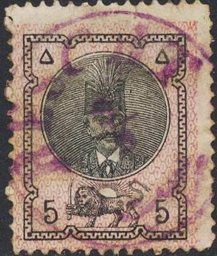
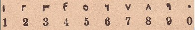
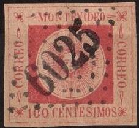

{kind=link}


Return To Catalogue - Persia 1868 issue - Persia (Iran) 1881-1894 - 1894-1902 - 1903-1910 - 1911 onwards- Miscellaneous
Note: on my website many of the
pictures can not be seen! They are of course present in the
catalogue;
contact me if you want to purchase the catalogue.

(Arabic numerals)
More information about stamps from Persia, forgeries etc. can be found on: http://www.persi.com/fakes/fakes/fake.html, http://fuchs-online.com/iran/lions-03.htm or http://www.iranphilatelic.org/scams.htm.
1 c black on lilac 1 c black on red (with coloured border) 2 c black on green 2 c black on yellow (with coloured border) 5 c black on red 5 c black on green (with coloured border) 10 c black on blue 10 c black on lilac (with coloured border) 1 K black on brown (with coloured border) 5 K black on blue (with coloured border)
Value of the stamps |
|||
vc = very common c = common * = not so common ** = uncommon |
*** = very uncommon R = rare RR = very rare RRR = extremely rare |
||
| Value | Unused | Used | Remarks |
| Without coloured border | |||
| 1 c | *** | *** | |
| 2 c | *** | ** | |
| 5 c | *** | * | |
| 10 c | *** | *** | |
| With coloured border (1879) | |||
| 1 c | *** | *** | |
| 2 c | *** | *** | |
| 5 c | R | ** | |
| 10 c | R | *** | |
| 1 K | R | *** | |
| 5 K | *** | ** | |
Could these stamps be forgeries?:


Another forgery.

I think this is a cut from a postal stationery, but I'm not 100 % sure:


I've been told that this is a postal forgery, I have no further
information
This bisected 5 c stamp with '2 1/2' in a circle red surcharge on
a postcard is a forgery
If my information is correct, these bisects were produced by the postmaster of Persia, the Austrian A.F.Stahl. Stahl lost his job and his 'bisects' were sold by the Austrian stamp dealer Sigmund Friedl.
If my information is correct, reprints were made by Boital in Paris.
For stamps of Persia issued from 1881 to 1894 click here.
{kind=link}